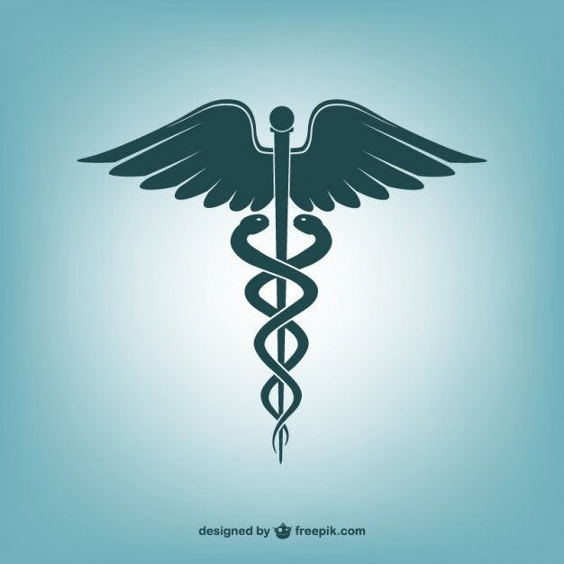
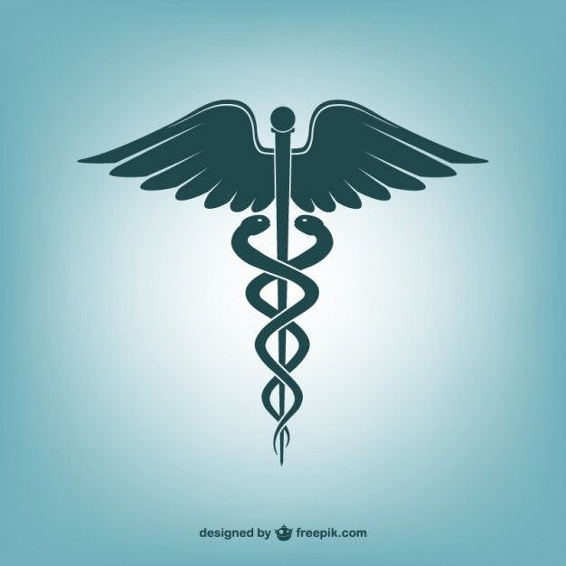
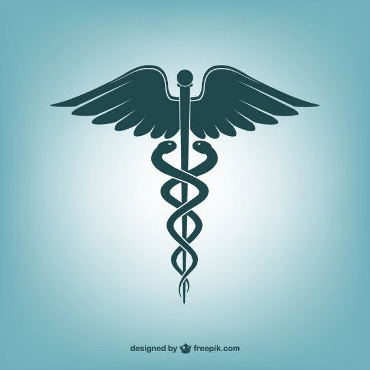

We hope to alleviate the problems facing most rural areas hospitals where critical patients, whether old or those giving birth, face challenges. This is a system that will help manage the number of patients and save more lives.

Problem & Solution
Problem: The influx of patients in rural areas and no clear system to give care to critical condition patients.
Solution: This system will help in keeping track of the patients in the most critical condition and hence help them receive more thorough care in rural areas.
Features
Features
Real-time Patient Monitoring: Monitor the health status of patients in real-time, providing instant updates to healthcare professionals.
Automated Alerts: Receive automated alerts for critical conditions, allowing for quick intervention and care.
Patient Record Management: Efficiently manage and organize patient records, including medical history and treatment plans.
Priority Queue System: Prioritize patients based on the severity of their condition, ensuring timely attention to critical cases.
Telemedicine Integration: Enable remote consultations between healthcare providers and patients for effective communication.
Data Analytics: Utilize data analytics to identify trends, forecast patient needs, and optimize resource allocation.
Mobile Accessibility: Access the system from mobile devices, facilitating on-the-go monitoring and management.
Secure Data Storage: Ensure the secure storage of sensitive patient information with robust data encryption.
User Authentication: Implement secure user authentication to restrict access to authorized healthcare professionals.
How It Works
It will help organize patient records in the order of the most critical patients and those who need the most attention to those who are not in a critical condition.
Target Users
Critical condition patients, the elderly, maternal patients, and little kids.
UML Diagrams
Component Diagram
Deployment Diagram
Use Case Diagram
Testimonials
We are still in the phase of developing the system hence we do not have any testimonials
 
